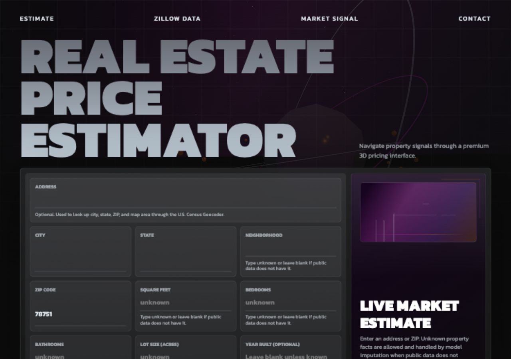

Portfolio project by Joshue Torres
Property Valuation Workbench
A production-style real estate estimator that verifies locations, maps properties, checks public data coverage, and explains when the model should not pretend to know unavailable property facts.

Real data workflow
Uses Census, Zillow Research, OpenStreetMap, optional provider APIs, and regional public context.
Honest estimates
Separates property-level model estimates from public market baselines and labels uncertainty.
Deployable app
Ships with Docker, Render Blueprint config, Vercel WSGI fallback, tests, and a health endpoint.